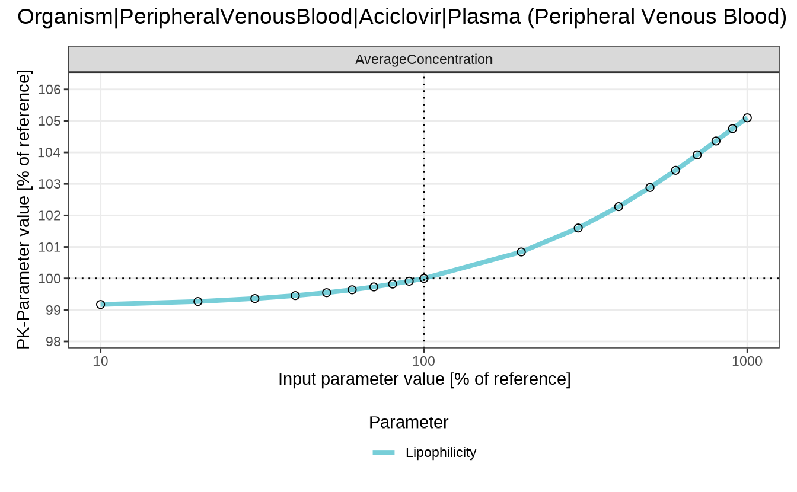

Workflow
Sensitivity analysis quantifies how the pharmacokinetics of the drug changes with a variation of simulation parameters. This is important to track if the values of simulation parameters are uncertain. Further information about sensitivity analysis and the mathematical background is provided in the OSPS documentation section Sensitivity Analysis.
In the aciclovir simulation example, the lipophilicity of aciclovir was assumed to be -0.097 in log units. In the sensitivity analysis, we want to quantify how much the pharmacokinetic parameters change if the lipophilicity of aciclovir is varied by certain factors.
The sensitivityCalculation() function in the
esqlabsR package does that by re-running the simulation
with a set of updated parameter values. By default, the specified
parameter will be multiplied by 0.1, 0.2, 0.3, …, 1, 2, 3, … and 10, and
for each value a simulation will be run. These factors can be customized
by the variationRange argument. The function returns a list
with output paths for which the sensitivity has been calculated, paths
of parameters that have been varied, a SimulationResults
object, and a data frame with calculated PK parameters for each of the
input parameter values.
simulation <- simulatedScenarios$TestScenario$simulation
OutputPaths <- enum(list(
Aciclovir_PVB = "Organism|PeripheralVenousBlood|Aciclovir|Plasma (Peripheral Venous Blood)"
))
analysis <- sensitivityCalculation(simulation, OutputPaths, parameterPaths = "Aciclovir|Lipophilicity")
head(analysis$pkData)
#> # A tibble: 6 × 11
#> OutputPath ParameterPath ParameterFactor ParameterValue ParameterUnit
#> <chr> <chr> <dbl> <dbl> <chr>
#> 1 Organism|Periphera… Aciclovir|Li… 0.1 -0.0097 Log Units
#> 2 Organism|Periphera… Aciclovir|Li… 0.2 -0.0194 Log Units
#> 3 Organism|Periphera… Aciclovir|Li… 0.3 -0.0291 Log Units
#> 4 Organism|Periphera… Aciclovir|Li… 0.4 -0.0388 Log Units
#> 5 Organism|Periphera… Aciclovir|Li… 0.5 -0.0485 Log Units
#> 6 Organism|Periphera… Aciclovir|Li… 0.6 -0.0582 Log Units
#> # ℹ 6 more variables: ParameterPathUserName <chr>, PKParameter <chr>,
#> # PKParameterValue <dbl>, PKPercentChange <dbl>, Unit <chr>,
#> # SensitivityPKParameter <dbl>In the aciclovir example case, the default value of lipophilicity is -0.097 log units, corresponding to the area under the curve (AUC) of 3915.87 µmol×min/L. Increasing the lipophilicity to -0.0097 log units leads to a decrease of AUC to 3895.43 µmol×min/L (a change of -0.52%), while decreasing the lipophilicity to -0.97 log units leads to an increase of AUC to 4015.73 µmol×min/L (a change of 2.55%). The sensitivity of AUC to 10-fold increase of lipophilicity is calculated as
The results of the sensitivity analysis can be plotted with two functions:
- the
sensitivitySpiderPlot()function generate a separate plot for each of the PK parameters under investigation. By default, thesensitivityCalculation()function computes the changes in area under the curve (AUC_inf), maximum concentration (C_max), and time when the maximum concentration is reached (t_max).
sensitivitySpiderPlot(analysis)
#> $`Organism|PeripheralVenousBlood|Aciclovir|Plasma (Peripheral Venous Blood)`
- the
sensitivityTimeProfiles()function plots the concentration profile for each of the input parameter values:
sensitivityTimeProfiles(analysis)
#> $`Organism|PeripheralVenousBlood|Aciclovir|Plasma (Peripheral Venous Blood)`
Sensitivity calculation for user-defined (non-PK parameters) outputs
Though the typical workflows for sensitivity analysis are focused on
PK parameters, it is also possible to calculate the sensitivities for
any numerical model outputs using user-defined functions. As for the PK
parameters, the provided function(s) will be applied to each output
defined in the argument outputPaths of the
sensitivityCalculation() function.
The custom functions are provided as a named list of functions in the
customOutputFunctions argument. Each function must have the
arguments x and y, through which it accesses
the simulated time values (x) or the output values
(y). The function should return a single numeric value.
In the following example, we calculate the sensitivity of the average concentration of aciclovir in the peripheral venous blood to the lipophilicity of aciclovir.
We first define a function that calculates the mean of a given numerical vector:
meanFunction <- function(x, y) {
mean(y)
}Next, we run the sensitivity analysis for the average concentration of aciclovir in the peripheral venous blood:
To define custom labels for the parameters in the resulting plots,
you can pass a named vector to the parameterPaths
argument, where the names will be used as labels instead of full
paths.
simulation <- simulatedScenarios$TestScenario$simulation
customOutputPaths <- enum(list(
Aciclovir_PVB = "Organism|PeripheralVenousBlood|Aciclovir|Plasma (Peripheral Venous Blood)"
))
customParameterPaths <- c("Lipophilicity" = "Aciclovir|Lipophilicity")
customAnalysis <- sensitivityCalculation(
simulation,
customOutputPaths,
pkParameters = list(),
parameterPaths = customParameterPaths,
customOutputFunctions = list(AverageConcentration = meanFunction)
)
#> Following PK parameters are specified but were not calculated:
head(customAnalysis$pkData)
#> # A tibble: 6 × 11
#> OutputPath ParameterPath ParameterFactor ParameterValue ParameterUnit
#> <chr> <chr> <dbl> <dbl> <chr>
#> 1 Organism|Periphera… Aciclovir|Li… 0.1 -0.0097 Log Units
#> 2 Organism|Periphera… Aciclovir|Li… 0.2 -0.0194 Log Units
#> 3 Organism|Periphera… Aciclovir|Li… 0.3 -0.0291 Log Units
#> 4 Organism|Periphera… Aciclovir|Li… 0.4 -0.0388 Log Units
#> 5 Organism|Periphera… Aciclovir|Li… 0.5 -0.0485 Log Units
#> 6 Organism|Periphera… Aciclovir|Li… 0.6 -0.0582 Log Units
#> # ℹ 6 more variables: ParameterPathUserName <chr>, PKParameter <chr>,
#> # PKParameterValue <dbl>, PKPercentChange <dbl>, Unit <chr>,
#> # SensitivityPKParameter <dbl>Note: If we want to calculate the sensitivity
of the custom function only without the default PK-parameters, we need
to set the pkParameters value to an empty list.
Finally, we plot the sensitivity of the average concentration of aciclovir in the peripheral venous blood to the lipophilicity of aciclovir.
sensitivitySpiderPlot(customAnalysis)
#> $`Organism|PeripheralVenousBlood|Aciclovir|Plasma (Peripheral Venous Blood)`